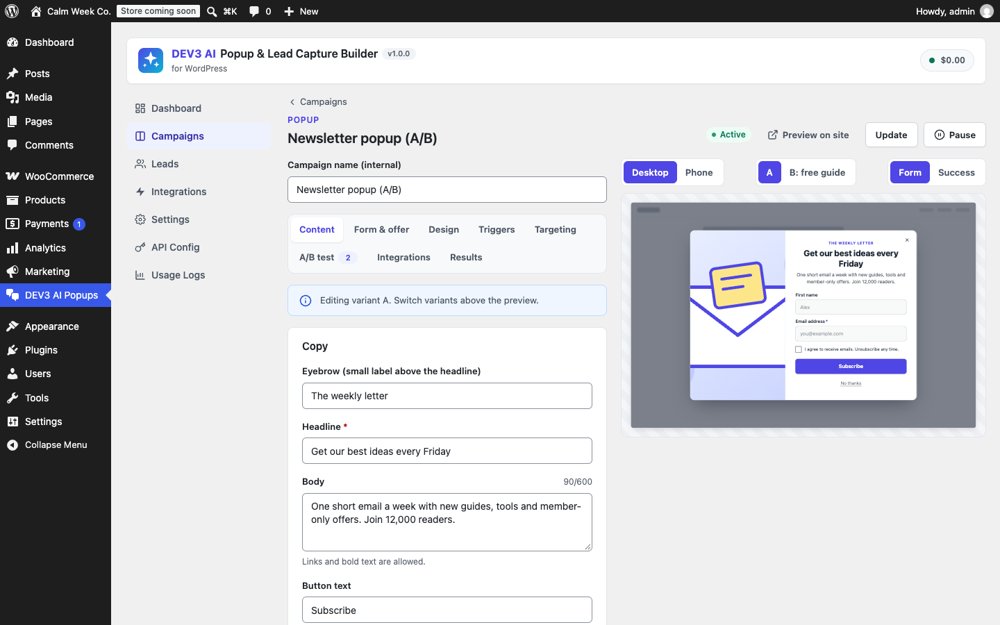
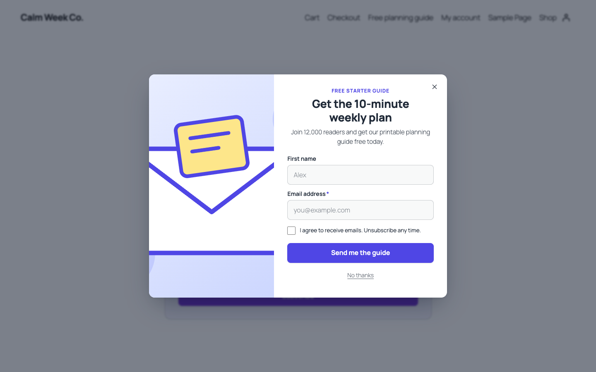
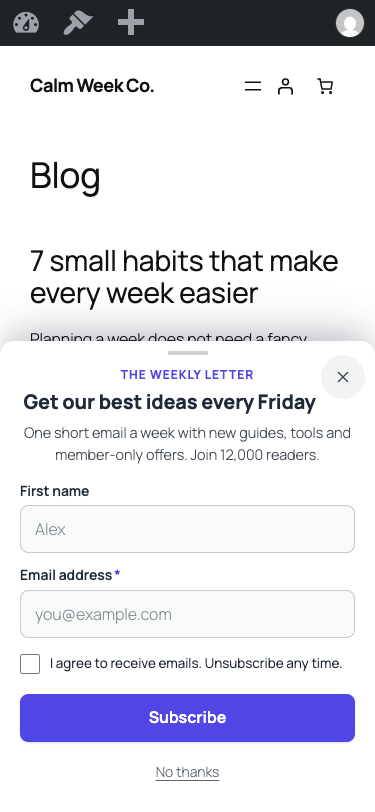

1. Installation
- In WordPress go to Plugins → Add New → Upload Plugin, choose
dev3-ai-popup-builder.zipand activate it. - A new menu DEV3 AI Popups appears. Open Campaigns → New campaign.
- Pick one of the 12 templates (or Describe with DEV3 AI). It is created as a draft.
- Adjust content, design, triggers and targeting, click Preview on site to see it live (only you see drafts), then Publish.
No licence key or activation is needed. Updates are delivered as new zips through CodeCanyon.
2. Google Gemini API key (optional)
- Open Google AI Studio → API keys and create a key.
- In DEV3 AI Popups → API Config paste the key and save. It is encrypted (AES-256-GCM) and never sent to browsers. Alternatively define
define( 'DEV3PU_GEMINI_API_KEY', '…' );inwp-config.php. - Optional: set a monthly AI budget (USD). AI pauses when it is reached; campaigns keep working.
Default models: gemini-2.5-flash (copy, variants, targeting, explanations) and a heavier thinking budget for whole-campaign drafts. Visitors never trigger AI calls.
3. Campaigns and formats
| Format | What it is | Accessibility |
|---|---|---|
| Popup | Centered modal, sizes S/M/L, layouts stacked / image left / image on top / minimal, adjustable backdrop. | Dialog with aria-modal, focus trap, Escape, focus restored, scroll lock without layout shift. |
| Slide-in | Card in the bottom-right or bottom-left corner. | Non-modal dialog: never steals focus; Escape closes it when focused. |
| Floating bar | Top or bottom bar that overlays the page (never pushes content). Ideal for announcements or a one-field signup. | Labelled region. |
| Full screen | Welcome mat covering the viewport (a bottom sheet on phones in mobile-safe mode). | As popup. |
| Inline form | Rendered in the page by the Lead form block, [dev3pu_form id="…"] or automatically before/after posts. | Normal form with labels, errors linked by aria-describedby. |
Statuses: Draft (only previews), Active, Paused, Archived. Campaigns can be duplicated, scheduled (start/end) and prioritised (higher priority wins when several could open).
4. The visual editor
- Content: eyebrow, headline, body (links and bold allowed), button, “No thanks” link, image from the media library with alt text, success title and message. With several variants, you edit the variant selected above the preview.
- Form & offer: form (up to 6 fields: email, text, phone, dropdown, checkbox), button link (CTA) or announcement only; GDPR consent checkbox (its exact text is stored with each lead); offer after signup: none, a fixed code, or a unique one-time WooCommerce coupon (percent or fixed, expiry, prefix, restricted to the lead's email); show a message or redirect.
- Design: format, layout, size, alignment, position, colours (with a live WCAG contrast check), corner radius, backdrop darkness and animation (disabled automatically for reduced-motion users). Fonts come from your theme.
- Preview: Desktop / Phone frames, variant switcher, Form / Success state. It uses the same renderer and CSS as the front end.
5. Triggers
| Trigger | Setting | Notes |
|---|---|---|
| On page load | - | On phones in mobile-safe mode this becomes “after 10 s or 40% scroll”. |
| After time on page | seconds | |
| After scrolling | percent | |
| Exit intent | sensitivity (px) | Desktop: the pointer leaves through the top. Phones: a fast scroll back up after 30% depth (or off). |
| After inactivity | seconds | No mouse, keyboard, scroll or touch. |
| On click | optional CSS selector | Always available: links to #dev3pu-open-ID, elements with class dev3pu-open-ID, the Popup button block and [dev3pu_button id="ID" label="…"]. Click-opened campaigns ignore frequency caps and replace an automatic bar/slide-in. |
6. Targeting and frequency
- Pages (server-side, works with page caches): every page, only matches, or all except matches. Rules: front page, post type, IDs, category/tag/term, URL contains or wildcard (
/blog/*), search results, 404, WooCommerce shop/product/cart/checkout/account. - Visitors (in the browser): devices (desktop >1024px, tablet, phone ≤600px), logged in/out, new vs returning, minimum pages viewed in this visit, referrer (search engines, social networks, direct, contains / does not contain), UTM rules (equals/contains; first-touch UTMs are remembered for the visit).
- WooCommerce cart: minimum/maximum cart value and “not empty”, read from a small
dev3pu_cartcookie that is refreshed whenever totals are calculated (classic cart and Cart/Checkout blocks). - Frequency: once per visit, at most every N days, at most N times, or every page view; hide for N days after closing; never again (or after N days) after signing up.
- Global guards (Settings): max overlays per page view (default 1), seconds between overlays, hidden roles, Do Not Track / Global Privacy Control.
7. A/B tests
Add up to 4 variants (copies of the control, or DEV3 AI offer variants) and set traffic weights. Each visitor always sees the same variant. Views, conversions (form sign-ups or CTA clicks) and closes are counted per variant per day. Results shows conversion rate, uplift vs control and confidence (two-proportion z-test); a variant is marked significant at ≥95% with ≥100 views per variant. Declare winner stops the test and serves only that variant; history is kept. Inline A/B variants are chosen before the first paint, so there is no layout shift.
8. Leads
Leads lists every signup with campaign, variant, consent text, page, referrer, UTM, device, coupon and integration status. Search, filter by campaign/status/date, open details, retry sync, delete, and Export CSV (UTF-8, Excel-safe, guarded against formula injection). A second signup with the same email for the same campaign updates the lead instead of duplicating it. Spam protection: hidden honeypot, minimum fill time, per-IP rate limits and server-side validation.
9. Integrations
- Mailchimp: API key (ends in
-usXX), audience picker, tags, optional double opt-in. First/last name and phone are mapped to FNAME/LNAME/PHONE. - Brevo: v3 API key and list picker; FIRSTNAME/LASTNAME/SMS attributes.
- Webhook: JSON POST per lead (
event: lead.captured, lead, campaign, site) to any public HTTPS URL; internal/private hosts are refused. With a signing secret every request carriesX-DEV3PU-Signature: sha256=HMAC(body).
Keys are stored encrypted and never shown again (only the last 4 characters). If the campaign has a consent checkbox, Mailchimp and Brevo only receive leads who ticked it. Failures never block the visitor's success message; the lead shows “Sync failed” with the error and a Retry sync button.
10. DEV3 AI features
| Feature | Where | What you get |
|---|---|---|
| Write with DEV3 AI | Editor → Content | New copy for the selected variant (eyebrow, headline, body, button, decline, success texts) shown as a diff. Accept, edit, regenerate or reject. |
| Offer variants | Editor → A/B test | Three different angles or offers with rationale; “Add to test” creates a variant. |
| Suggest targeting | Editor → Targeting | Triggers, devices, page rules, referrer, visitor type and frequency with reasons, shown as a JSON diff; mobile-friendly by default. |
| Explain results | Editor → Results | Plain-language summary, a winner only when the data is conclusive, and an idea for the next test. |
| Describe a campaign | New campaign | A complete draft campaign from one sentence. Created only when you click “Create draft and edit”. |
Nothing is saved, published or activated by AI. Copy follows the Brand voice setting and your admin language. Usage and cost are visible under Usage Logs.
11. Blocks and shortcodes
[dev3pu_form id="12"] inline campaign
[dev3pu_button id="7" label="Get the guide"] opens an overlay campaign
<a href="#dev3pu-open-7">Open</a> any link
<span class="dev3pu-open-7">…</span> any elementBlocks: Lead form and Popup button (Widgets category). JavaScript API: window.dev3puRuntime.open( 7 ) and .close().
12. Mobile and accessibility
Mobile-safe mode (on by default) shows popups and full-screen campaigns on phones as a bottom sheet that covers at most 60% of the screen, has no blocking backdrop and does not lock scrolling, unless the visitor opened it with a click. Touch targets are at least 44px, inputs use 16px text (no iOS zoom) and the sheet respects the safe area. Overlays use semantic dialogs/regions with labels, visible focus, Escape to close and focus return; animation uses only opacity/transform and is turned off for prefers-reduced-motion.
13. Performance
- Nothing is loaded on pages where no campaign can show.
- One deferred, dependency-free script (~19 KB, ~7 KB gzipped) started on browser idle; campaign DOM and images are created only when a trigger fires.
- Overlays are fixed-position and never move page content (no CLS). On overlay-only pages the stylesheet loads without blocking render.
- Inline forms are rendered on the server with image dimensions reserved.
14. Settings
Mobile-safe mode, max overlays per page view, seconds between overlays, hidden roles, Do Not Track/GPC, tracking on/off, hashed IP storage, lead retention (days), minimum seconds before a form can be sent, brand voice and delete-on-uninstall.
15. Hooks and REST
| Hook | Use |
|---|---|
do_action( 'dev3pu_lead_captured', $lead, $campaign, $created ) | Send leads to a CRM of your own. |
do_action( 'dev3pu_campaign_created', $id ) | After a campaign is created. |
apply_filters( 'dev3pu_page_campaigns', $campaigns, $ctx ) | Add/remove overlay campaigns for the current page. |
apply_filters( 'dev3pu_templates', $templates ) | Add your own templates. |
apply_filters( 'dev3pu_public_rate_limit', $limit, $bucket ) | Per-IP limits for dev3pu_track (120/min) and dev3pu_submit (10/min). |
dev3pu_manage_capability, dev3pu_capability | Who can manage campaigns / use AI. |
dev3pu_prompt_dev3pu_copy (and _variants, _targeting, _explain, _campaign) | Adjust the AI prompts. |
REST namespace dev3pu/v1: campaigns, campaigns/<id> (+ /duplicate, /status, /results, /winner), templates, dashboard, leads, integrations, ai/* (admin, REST nonce required) and public/track, public/submit (same-origin, rate limited).
16. Privacy
Leads are stored in your database only. They are included in WordPress personal data exports and erasure requests. Tracking counters are anonymous daily totals; the browser keeps small localStorage/sessionStorage entries for frequency caps and A/B assignment. IP addresses are not stored unless you enable hashed IPs. When AI is used, the campaign texts you send are processed by Google Gemini under your own API key; no visitor data is sent to AI.
17. FAQ
A popup does not appear.
Check the status is Active, the page rules match, your role is not hidden in Settings, and frequency caps (they are stored in your browser: use a private window or Preview on site). Only one overlay shows per page view by default.
Does it work with caching plugins?
Yes. Exclude nothing; the public endpoints need no nonce.
Can I use my own form plugin?
Use a CTA campaign that links to your form page, or the inline/popup forms built in.
Why do I see a bottom sheet on my phone?
Mobile-safe mode. Turn it off in Settings if you really need full popups on phones.
18. Changelog
1.0.0 · Initial release.